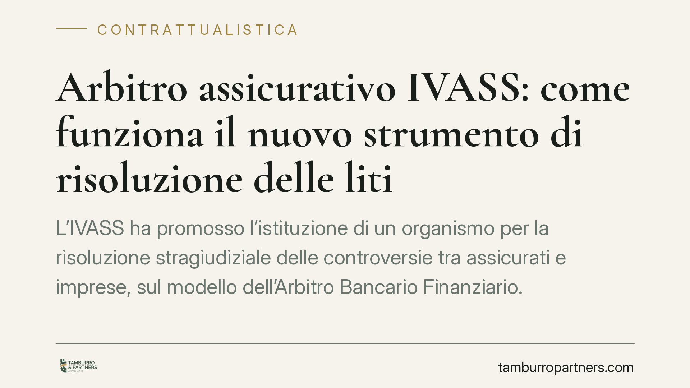
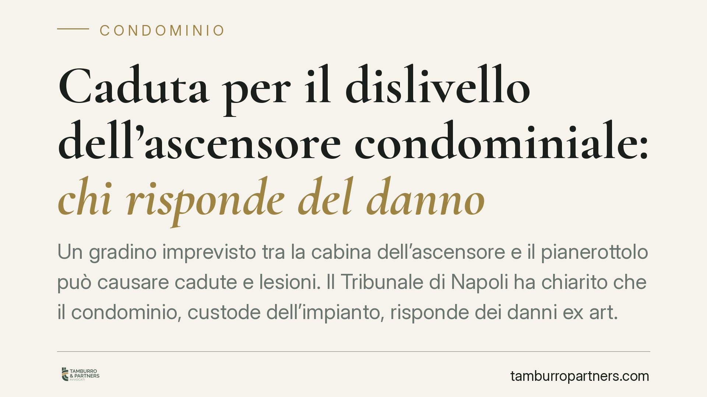
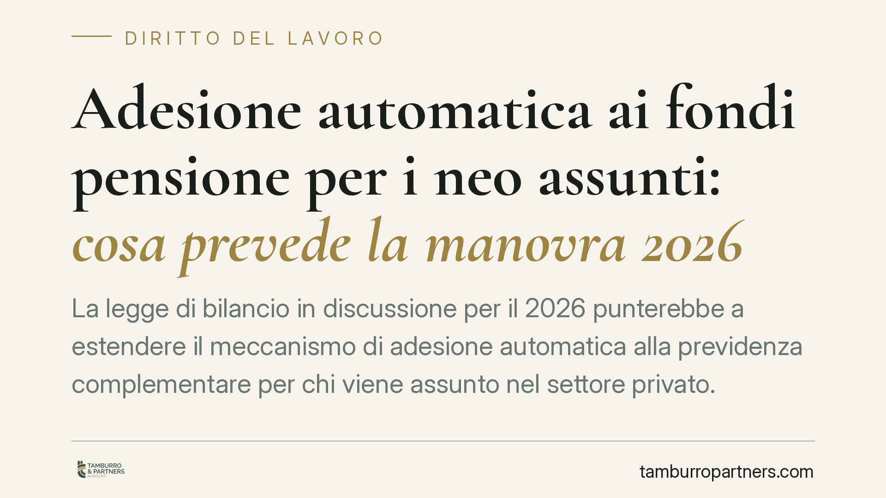

Contratti online e clausole vessatorie: quando il click non basta
Nella contrattualistica digitale torna centrale un interrogativo: la spunta o il click su un modulo web bastano ad approvare in modo specifico le clausole vessatorie ex art. 1341, …

Formazione sulla sicurezza: va completata prima di iniziare a lavorare
La formazione sulla sicurezza deve precedere l'ingresso in azienda: il lavoratore va formato prima di iniziare l'attività, non dopo. Per i settori stagionali si discute una deroga …

Assistenza agli anziani non autosufficienti: il nuovo Piano consolida senza riformare
Il nuovo Piano Nazionale per l'assistenza agli anziani non autosufficienti conferma l'assetto esistente senza introdurre le riforme strutturali previste dalla Legge 33/2023. Il Pat…

Apprendistato al termine: conferma, recesso e dimissioni
Al termine del periodo formativo, il contratto di apprendistato non si estingue da solo: prosegue come rapporto a tempo indeterminato salvo che una delle parti receda. Capire chi d…

Manutenzione del giardino condominiale: chi decide davvero
Il giardino condominiale è un bene comune, ma sulla sua manutenzione la parola spetta all'assemblea, non all'amministratore. Chi agisce di propria iniziativa espone sé stesso e il …

TFR e fondi pensione: il modello life cycle nella previdenza complementare
Si discute di un'evoluzione del meccanismo con cui il TFR non destinato espressamente confluisce nella previdenza complementare, orientandolo verso linee di investimento "life cycl…

Uso della piscina condominiale e millesimi: cosa può decidere l'assemblea
Chi detiene più millesimi può usare di più la piscina condominiale? La domanda tocca un nodo delicato: il confine tra disciplina dell'uso delle parti comuni e attribuzione di dirit…

Arbitro assicurativo IVASS: come funziona il nuovo strumento di risoluzione delle liti
L'IVASS ha promosso l'istituzione di un organismo per la risoluzione stragiudiziale delle controversie tra assicurati e imprese, sul modello dell'Arbitro Bancario Finanziario. Proc…
Ritardo aereo: la Cassazione apre al rimborso delle spese legali stragiudiziali
La Corte di Cassazione ha chiarito che il passeggero danneggiato da un ritardo aereo può ottenere il rimborso delle spese legali sostenute nella fase stragiudiziale, cioè prima del…

Caduta per il dislivello dell'ascensore condominiale: chi risponde del danno
Un gradino imprevisto tra la cabina dell'ascensore e il pianerottolo può causare cadute e lesioni. Il Tribunale di Napoli ha chiarito che il condominio, custode dell'impianto, risp…
Cessione d'azienda e locazione: il locatore può agire contro il cedente
Nella cessione d'azienda il contratto di locazione commerciale si trasferisce al cessionario anche senza il consenso del locatore. Ma il cedente non esce di scena: resta responsabi…
Previdenza complementare: la gestione dei contributi da parte del datore di lavoro
La destinazione del TFR alla previdenza complementare impone al datore di lavoro adempimenti precisi al momento dell'assunzione. Tra scelta espressa del lavoratore e meccanismo del…
NASpI dopo assenza prolungata e dimissioni per giusta causa: cosa cambia
Il Collegato Lavoro 2024 ha introdotto le cosiddette dimissioni per fatti concludenti: l'assenza ingiustificata prolungata può valere come dimissione, con perdita della NASpI. Dive…
TFR ai fondi pensione con adesione automatica: cosa prevede la manovra 2026
La Legge di Bilancio 2026 punta a rafforzare la previdenza complementare rendendo più automatico il conferimento del TFR ai fondi pensione. Attenzione, però: si tratta di una misur…

Adesione automatica ai fondi pensione per i neo assunti: cosa prevede la manovra 2026
La legge di bilancio in discussione per il 2026 punterebbe a estendere il meccanismo di adesione automatica alla previdenza complementare per chi viene assunto nel settore privato.…
Telecamere in condominio: regole e maggioranze per la videosorveglianza
Installare telecamere negli spazi comuni di un condominio non è una decisione libera: serve una delibera assembleare con maggioranza qualificata e il rispetto delle regole privacy …

WhatsApp e spese condominiali: l'amministratore può usarlo?
WhatsApp è ormai uno strumento diffuso anche nella gestione del condominio. Ma una comunicazione via chat sulle spese condominiali ha valore giuridico? E può sostituire convocazion…

Nomi dei condòmini morosi: chi può conoscerli e quando
La domanda è ricorrente nelle assemblee: chi paga regolarmente può sapere quali condòmini sono in arretrato? La risposta è affermativa, ma entro precisi limiti. L'art. 63 disp. att…

Il locale bruciatore resta comune anche senza caldaia
La Corte di cassazione ribadisce un principio destinato a incidere su molti condomìni: il locale che ospitava la caldaia centralizzata resta bene comune anche quando l'impianto vie…

Mobilità tra enti pubblici e nulla osta: regole e limiti
La mobilità volontaria consente al dipendente pubblico di passare a un altro ente tramite cessione del contratto. Il punto critico resta il nulla osta dell'amministrazione di appar…

Dall'assegno di invalidità alla pensione di vecchiaia: come funziona la conversione
L'assegno ordinario di invalidità non è una prestazione definitiva: al raggiungimento dell'età pensionabile può convertirsi in pensione di vecchiaia. La prassi INPS ha richiamato i…

Impugnazione delibera condominiale: la prova della ricezione del verbale
Il termine di trenta giorni per impugnare una delibera assembleare non decorre da un invio generico, ma dalla prova certa che il condomino assente abbia ricevuto il verbale. Per ch…

Licenziamento ritorsivo: come si prova in giudizio
Il licenziamento ritorsivo è la rappresaglia del datore contro un dipendente che ha esercitato un proprio diritto. Provarlo è difficile: l'onere grava sul lavoratore. La giurisprud…

Licenziamento collettivo in una sola sede: regole e tutele
Ridurre il personale in una sola sede non esonera dalla procedura di licenziamento collettivo. Se l'azienda supera 15 dipendenti e intende licenziare almeno cinque lavoratori in 12…

TFR e silenzio-assenso: come funziona davvero la destinazione alla previdenza complementare
Periodicamente si riaffaccia il tema della destinazione automatica del TFR ai fondi pensione. Circolano anche notizie di una riforma che imporrebbe il conferimento generalizzato da…

Fondo lavori condominiale generico: quando la delibera è viziata
L'assemblea decide di accantonare denaro in un fondo lavori, ma senza chiarire quali opere finanziare. È legittimo? Una recente pronuncia di merito torna sul tema della determinate…

Madri lavoratrici e assegno di invalidità: il beneficio del comma 40
Le lavoratrici madri inquadrate nel sistema contributivo puro possono ottenere un trattamento previdenziale più favorevole grazie al beneficio per figli del comma 40 della Legge 33…

Mobbing e richiami al dipendente: quando scatta il risarcimento
La Sezione Lavoro della Cassazione, con un orientamento ormai consolidato, ribadisce che il mobbing richiede una pluralità di condotte sistematiche e un disegno persecutorio, non u…

Caldo estremo sul lavoro: quando il lavoratore può rifiutarsi di operare
Con l'aumento delle ondate di calore, cresce la domanda: il lavoratore può rifiutarsi di operare quando le temperature diventano pericolose? La risposta non è un sì automatico, ma …

Recuperare i soldi prestati all'ex: il valore probatorio dei messaggi WhatsApp
I messaggi scambiati su WhatsApp possono concorrere a provare un prestito di denaro tra ex partner, ma da soli raramente bastano. La distinzione tra prestito restituibile e regalo …